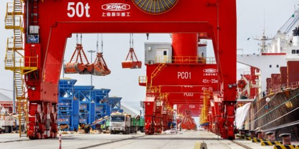

Djibouti et les actionnaires chinois.
L’autorité portuaire djiboutienne et ses actionnaires de China Merchant Group (CMG), ont inauguré, le 5 juillet 2019, la Djibouti Free Trade Zone (DIFTZ), qui doit devenir, d’ici à 2028, la plus grande zone franche d’Afrique et nécessitera un investissement global de 3,5 milliards de dollars.
Le port de Djibouti.
Les Républiques de Chine et de Djibouti viennent de cimenter un peu plus leur partenariat économique. Un an après l’ouverture du Doraleh Multi-Purpose Port (DMPP), l’autorité portuaire djiboutienne et ses actionnaires de China Merchant Group (CMG) – qui la détiennent à 23,5 % -, ont inauguré le 5 juillet la Djibouti Free Trade Zone (DIFTZ), située juste de l’autre côté de la baie. Aux 580 millions de dollars (516 millions d’euros) investis en 2017 pour le DMPP, s’ajoutent donc les 370 millions nécessaires à la réalisation de la première phase de 240 hectares de ce projet pharaonique. La DIFTZ doit en effet devenir, d’ici à 2028, la plus grande zone franche d’Afrique avec une superficie de 4 800 hectares, pour un investissement global de 3,5 milliards de dollars.